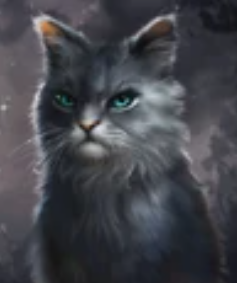

Salutations!
Thank you for visiting my website. You can expect a whimsical range of content here, ranging from my computer science projects, musical compositions, to my absurd ramblings on philosophy.
A fantasy series known as Warrior Cats, which I am fond of, puts it best: may the stars light your path, fellow Netizen! Well, I added that last bit on my own. I hope you enjoy your time on my site; cheers!
